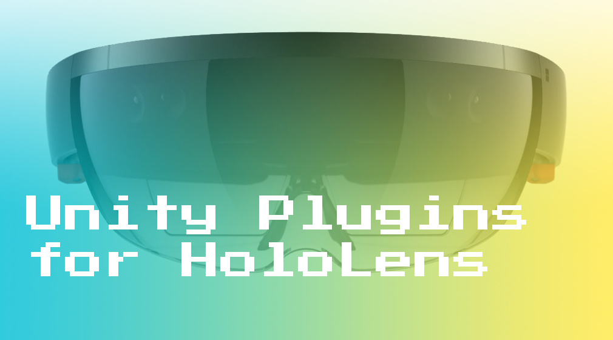

<link href="https://fonts.googleapis.com/css?family=Open+Sans" rel="stylesheet">
<link href="https://cdnjs.cloudflare.com/ajax/libs/prism/1.6.0/themes/prism.min.css" rel="stylesheet" />
<style>
  body { font-family: 'Open Sans', sans-serif; }
  .videoWrapper {
	position: relative;
	padding-bottom: 56.25%; /* 16:9 */
	padding-top: 25px;
	height: 0;
}
.videoWrapper iframe {
	position: absolute;
	top: 0;
	left: 0;
	width: 100%;
	height: 100%;
}
</style>

<main>
  <div class="pl-2 pr-2 column pt-6">
    <h1 class="h2">Creating Plugins for Unity3D</h1>
    <h2 class="h3"></h2>

    


    <p>
    One question I keep encountering is “how do I make a plugin in Unity?”  To address it I decided to document some of my findings in this plugin primer.  First, I'll define what a Unity plugin is and is not.  Next, I'll show some examples of existing Unity plugins.  Finally, I'll wrap up with a simple step-by-step setup of a plugin project in Visual Studio that outputs into a Unity application project.
    </p>

    <p>
    Essentially, a Unity plugin is a way to use platform specific code and libraries within your Unity applications.  They come in two flavors: <a href="https://docs.unity3d.com/Manual/UsingDLL.html">managed plugins</a> which only use a subset of the .NET apis and <a href="https://docs.unity3d.com/Manual/NativePlugins.html">native plugins</a> which commonly interface directly with platform specific apis or sdks.  Typically, you’re either consuming someone else’s plugin (such as the Vuforia plugin in the Unity Asset Store) or authoring your own.  In some unique cases, you might be both consuming other developer’s plugins and authoring your own plugin within the same Unity project.
    </p>

    <p>
    Alternatively, a Unity plugin is not a quick and easy way to slam breaking nuget packages into all of your platforms.  However - with a bit of care and planning - setting up, authoring, and consuming plugins in Unity is simple and relatively straightforward!

    <p>
    For reference, a few good examples of existing Unity Plugins are <a href="https://www.assetstore.unity3d.com/en/#!/content/74050">Vuforia</a>, <a href="https://www.assetstore.unity3d.com/en/#!/content/56353">AV Pro</a>, and the <a href="https://github.com/Microsoft/xbox-live-unity-plugin">Xbox Live plugin</a>.  These plugins have different native platform libraries that enabled depending on the platforms capabilities.  You can even take a peak at how they output their code and libraries either by installing the plugin directly into a project or through the viewer on the asset store.  The Xbox Live plugin also has a good example of help documentation and build scripts that can be leveraged in your own projects.
    </p>

    <p>
    A simple example of an appropriate use case for using a plugin would be to get the camera feed for a target device.  In Unity, your monobehaviour might make a generic call to GetCamera() but the plugin is authored in such a way that on an IOS device a swift library is used, on an Android device a java library is used, and on Hololens device a c# library is used.  The heavy lifting here is accomplished using <a href="https://docs.unity3d.com/Manual/PlatformDependentCompilation.html">a wide variety of preprocessor directives</a> and structuring your platform specific code in a plugins folder that Unity can understand.
    </p>

    <p>
    When authoring a Unity plugin, it is important to setup your various project layouts correctly.  Once in the editor, Unity has a set of conventions it expects to be followed.  Most importantly, all plugin code needs to be in a folder called “Plugins” under the root “Assets” folder.  Additionally, platform specific versions of libraries can be placed in appropriate folders: ex. Assets/Plugins/WSA for windows store app specific dlls.
    </p>

    <h2 class="h4">Visual Studio Plugin Project (platform specific plugin authoring)</h2>
    <p>
      <ol>
        <li>Create a new project in Visual Studio: Visual C#, Windows Universal, Class Library with .NET 4.6 - this is for your plugin code</li>
        <li>Important: Verify that the nuget package for .NET core is the correct version (currently, Unity generates a 5.0.0 project but the latest is 5.3.3)</li>
        <li>Place your plugin code files in this project</li>
        <li>Create a second new project in Visual Studio: Visual C#, Classic Desktop, Class Library with .NET 3.5 - this will be a shadow project for stubs and to check compilation on other platforms and older apis (such as the Unity editor)</li>
        <li>Add existing files (from the other project) to this project to check for compilation issues</li>
      </ol>
    </p>

    <p>
    Set the build architecture to “Any CPU”</br>
    In the 3.5 project, set the namespace and assembly name to the match what is in the 4.6 project</br>
    Set the build path of the projects to output libraries - this will usually be a relative path outside of the .NET project and into a Unity project</br>
    For the 4.6 project, output the dll into the directory: /Assets/Plugins/WSA</br>
    For the 3.5 project, output the dll into the directory: /Assets/Plugins</br>
    </p>

    <p>
    As a quick test you can conditionally compile in the .NET Tasks library</br>
    In the 4.6 project open up your plugin file and at the top add the following code:</br>
    </br>
    </br>
    <pre>
      <code class="language-csharp">
    #if NETFX_CORE
    using System.Threading.Tasks;
    #endif
      </code>
    </pre>
    </br>
    </br>

    Since the 4.6 profile includes NETFX_CORE, this code will show up with the correct formatting</br>
    In the 3.5 project, open up the same “referenced” file</br>
    Since the 3.5 profile does not include NETFX_CORE, this code will show up as commented out</br>
    </p>

    <h2 class="h4">Unity Application Project (consumes/bootstraps plugin)</h2>
    
    <p>
    After your plugin has been built and output to Unity, a few more settings inside the Unity project must be set</br>
    Select the dll output into the root “Plugins” folder - this is the placeholder dll</br>
    Using the <a href="https://docs.unity3d.com/Manual/PluginInspector.html">Plugin Inspector</a>, uncheck “Any Platform” and select the desired platforms to use this placeholder dll in (all platforms checked but WSAPlayer)</br>
    Using the Plugin Inspector, check the “Don’t Process” checkbox</br>
    Select the dll output into the “Plugins/WSA” folder - this is the platform dll</br>
    Using the Plugin Inspector, check only the desired platform to use this dll (only WSAPlayer)</br>
    In the “Placeholder” drop down, select Assets > Plugins > My.dll (whatever the root dll is called)</br>
    </p>


    <h2 class="h4">Visual Studio Output Project (generated for final application)</h2>
    <p>
    Verify any nuget packages and version numbers in the final generated project
    </p>


    <p>
    Here is a sample project I came across while doing my research.  It uses the WebRTC for UWP library inside a Unity plugin for use on a HoloLens device:

    <ul>
      <li><a href="https://github.com/DanAndersen/webrtc-hololens-unity-docs">Github: WebRTC + Hololens</a> - documentation</li>
      <li><a href="https://github.com/DanAndersen/WSAUnity">Github: VS Plugin Sample - Authoring</a> - the plugin project for Visual Studio</li>
      <li><a href="https://github.com/DanAndersen/WinPluginTest">Github: Unity Plugin Sample - Consuming</a> - the Unity project consuming the plugin output by the above project</li>
    </ul>
    </p>


    <p>
    Here are a few resources to get you started:
      <ul>
        <li><a href="https://channel9.msdn.com/Blogs/2p-start/Combining-Windows-10-features-with-Unity-games-in-your-own-plugin">Plugin Setup Video</a></li>
        <li><a href="https://forums.hololens.com/discussion/comment/14839/#Comment_14839">HoloLens + UWP + WebRTC</a></li>
        <li><a href="https://docs.unity3d.com/Manual/PluginInspector.html">Plugin Inspector/a></li>
        <li><a href="https://docs.unity3d.com/Manual/Plugins.html">Managed Plugins</a></li>
        <li><a href="https://docs.unity3d.com/Manual/NativePlugins.html">Native Plugins</a></li>
        <li><a href="https://docs.unity3d.com/Manual/UsingDLL.html">DLL Usage in Plugins</a></li>
      </ul>
    </p>

    <p>
      <iframe width="560" height="315" src="https://www.youtube.com/embed/DfRYLwG1Bug" frameborder="0" allowfullscreen></iframe>
    </p>

    <p>
      <iframe src="https://channel9.msdn.com/Blogs/2p-start/Combining-Windows-10-features-with-Unity-games-in-your-own-plugin/player" width="480" height="270" allowFullScreen frameBorder="0"></iframe>
    </p>

    <div class="pb-6 gap"></div>
  </div>
</main>

<script src="https://cdnjs.cloudflare.com/ajax/libs/prism/1.6.0/prism.min.js"></script>
